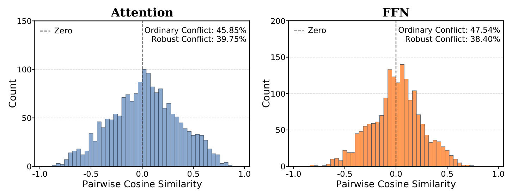
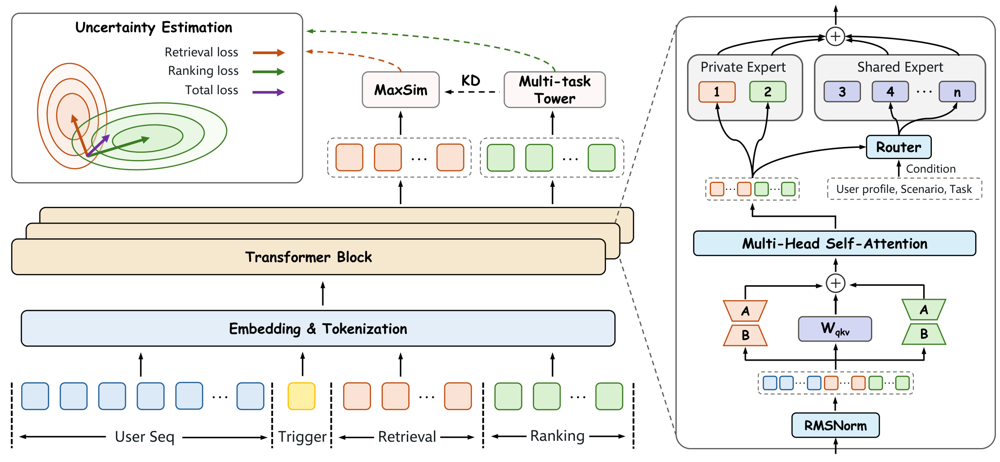
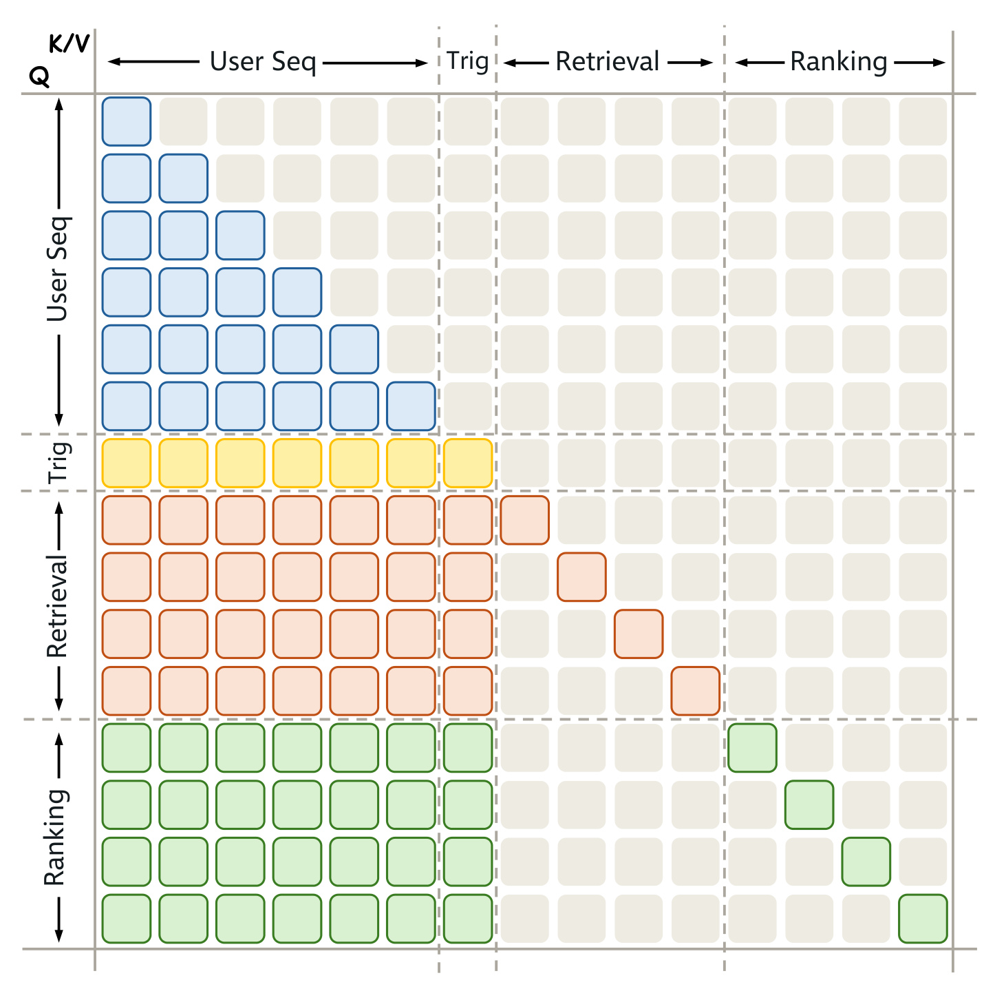
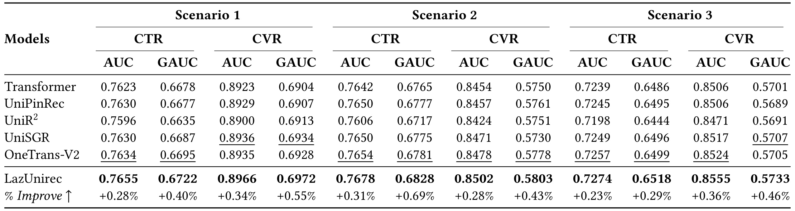
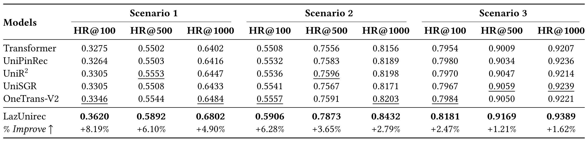
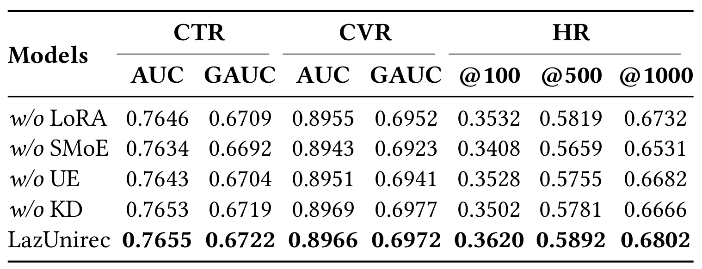
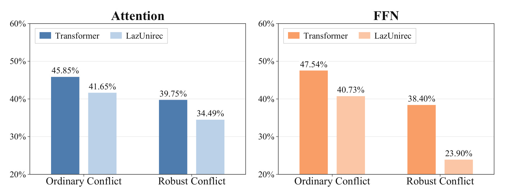
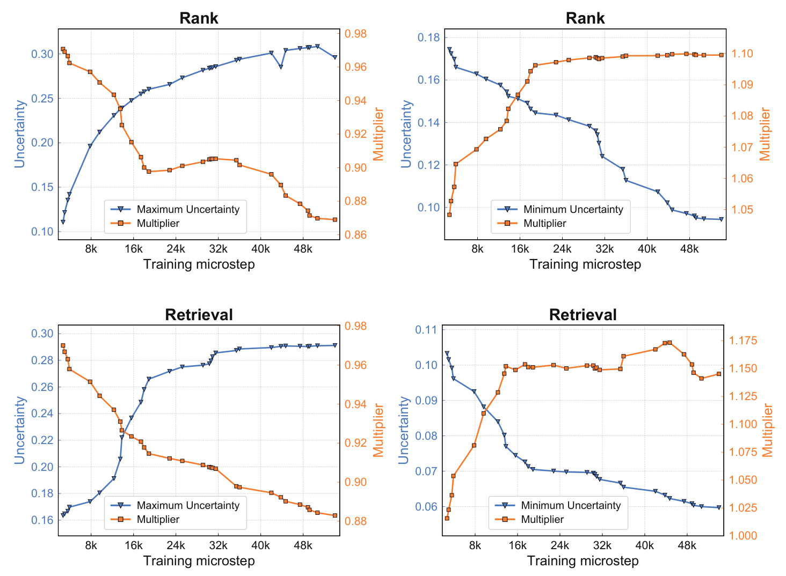
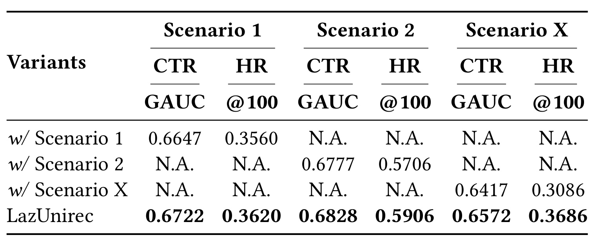
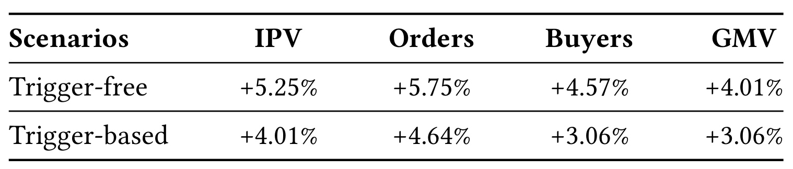

LazUnirec: Unifying Retrieval and Ranking in Multi-scenario Industrial Recommendation / 多场景工业推荐的统一召回与排序
Xiaodong Li、Junfeng Zhang、Shichao Nie、Ziyue Guo、Yiming Liu、Xinxin Xu、Xurong Li、Jinyuan Dang、Zhanming Ou、Jianan Yan、Tao Luo、Xiaoyi Zeng，均来自阿里国际数字商业集团。arXiv 预印本初版于北京时间 2026 年 11 月 24 日 21:26 提交，列于 11 月 25 日公告。本轮未核验到独立公开代码。 arXiv:2611.32590
LazUnirec 让多场景的召回和排序共享用户历史的 Transformer 编码，并给召回查询和排序候选留出任务私有计算。它保留了在线召回与排序两个服务阶段，排序在同一请求中复用召回产生的历史缓存。训练另有一条从排序到召回的列表蒸馏路径。
同一用户历史在召回和排序分别编码会产生重复计算。把历史编码直接合到一个骨干后，目录内候选竞争与请求内点击、转化拟合仍会把共享参数推向不同方向。多场景的反馈构成还会改变这些方向的稳定程度，固定共享范围和固定损失权重难以同时处理两类问题。
1. 背景和问题
推荐链路第一关处理的是目录规模。召回需要把全量物品压缩到后续阶段能处理的数量，因此通常把用户侧和物品侧分别编码，再用可检索的相似度快速筛选。多兴趣召回还要避免把用户近期浏览的几个主题压成一个均值向量。排序处理的是一个已经被召回或粗排筛过的候选集合，能够使用更细的用户与物品交叉特征，预测候选被点击和发生转化的概率。候选进入排序之前就有一次选择，排序阶段看到的竞争样本及其反馈分布通常与召回所见不同。在训练上，前者受候选曝光、浏览深度和转化事件约束，后者还要比较目录里的采样负例。两阶段即便取自同一份用户日志，也会给同一次点击构造出不同的监督。
长历史让分立编码的成本更明显。一个请求在召回阶段读取浏览和购买序列，排序又针对被取回的多个物品查询同一段历史。独立模型可以各自调节序列表示，也会在服务端重复投影和聚合。若排序训练按目标候选拆成样本，请求内的多候选甚至分别携带相同历史。把样本重组织为请求级，有机会让所有候选共用一次历史计算。共享历史编码还意味着两个任务可以共同塑造一份历史表示。这与单纯让多个排序目标共用底座有所不同，因为召回和排序处于不同的候选漏斗，历史信号会同时影响哪些候选被发现、哪些候选被抬高。
考虑一个商品详情页触发的请求。用户长历史可能透露相机品牌和价格偏好，当前所看镜头又为配件推荐限定接口。若服务只对触发物品做近邻查询，容易漏掉没有与该镜头形成强共现、却符合用户长期偏好的配件。若只用长历史，没有把触发上下文单列出来，则容易召回同品牌但不兼容的配件。无触发场景如浏览入口则缺少这一额外物品，历史更需要支持多个兴趣主题。论文将场景标记写进历史交互，并为有无触发各保留同一序列槽位，因此模型能同时看到交互发生时的场景和当前的请求环境。这里的场景同时影响请求来源、数据频率和标签构成，不能由一项总量指标含混带过。
在该工作之前，UniPinRec 用可兼容的输入和共享历史缓存支持两阶段。UniR2 把用户上下文、语义物品编码和排序特征放入同一 decoder 序列，辅以排序侧低秩适配并隔离部分优化。OneTrans-V2 则把共享用户计算扩到召回、粗排和精排。它们说明了同一个技术前提，即历史编码可以成为跨阶段接口。然而缓存能被读取只是计算图上的条件，两个损失是否适合同时写回共享参数是另一个问题。隔离梯度让任务私有部分处理分歧，能降低对共享空间的干扰，但也限制了被隔离任务重塑共同历史的能力。LazUnirec 希望让召回和排序都继续更新公共参数，再从参数容量和训练更新两个位置约束干扰。
共享骨干的干扰可以先通过两个任务在同一块参数上的梯度余弦观察。如果一个任务梯度所指方向与另一个任务形成钝角，一阶近似下沿某一任务的负梯度走，另一任务损失可能上升。两个方向合起来是否真的损害效果还要看梯度模长、参数分组与优化器更新。原文先用原始 Transformer 骨干上的统计给出问题量级。

Figure 1 左侧蓝色直方图属于 Attention，右侧橙色直方图属于 FFN。横轴是召回梯度和排序梯度的成对余弦，纵轴是落在每个区间的计数。竖虚线对应零值，左侧为方向相抵的观察。按余弦小于零计算普通冲突，注意力和前馈分别为 45.85% 和 47.54%。若要求余弦严格小于负 0.05，两块仍有 39.75% 和 38.40%。后一个口径让接近零的小扰动少影响结论。两块普通冲突与稳健冲突的差分别是 6.10 和 9.14 个百分点，说明只统计负号会把一部分较弱抵消一起算进去。也可以看到两块图纵轴刻度上限不同，不能凭同一横坐标处柱子看起来更高推断两个模块的记录数比值。图里没有分场景、分层或按梯度模长拆开，因而它支持公共参数存在高频冲突，也留下是哪类样本、哪几层造成主要业务损失的问题。第 3.4 节回到同一阈值核对模型调整后的比例。读图时还应注意，靠近零只说明两条向量角度接近直角，有效参数更新是否冲突还依赖学习率和归一化。
梯度冲突出现后，两条更新方向当下相斥，并不能自动说明哪一条更值得跟。若直接按梯度模长调节，一批罕见事件可能因为信号强而被放大，也可能因为极端样本而挤压另一任务。若固定场景损失系数，同一个场景在训练早期和晚期的梯度变化又会被视作同样可靠。本文为每个场景和任务维护历史方向证据，通过周期性探测共享参数上的归一化梯度，优先维持方向较稳定的信号。这种稳定性是历史统计。持续的曝光偏差可能稳定，节日大促引发的真实兴趣突变也可能短期不稳定。要评价可靠性权重，需要同时看离线效果、条件分布和实际业务反馈。
结构和更新之外，排序怎样把知识送回召回也值得单拆。两级共享参数后，候选上的相对喜好仍可能只被排序头使用。把排序的候选关系作为召回训练目标，可以改变候选在召回内积空间中的相对位置。这条路径受限于排序看到的列表，目录里没被选入的物品仍依赖召回自己的正例和负例。对多场景系统，缺数据的长尾入口可以从其他入口学习常见兴趣结构，排序端同样可能把大场景的曝光偏好传给小场景。判断迁移好坏要对照场景内候选命中、排序区分度和共同训练后的资源成本，而不是只看合并数据后的平均提升。
此外，线上复用需要公共 token 不依赖召回或排序候选集合，否则缓存第一次计算时缺少的候选信息会引起精度漂移。和普通标准因果串接不同，排序候选之间也不能随列表位置互相可见，否则候选数量、分批方式或服务排序变化都会改变同一候选的打分。论文用结构化掩码同时约束这两点。实验实际呈现的是三类问题的组合证据，即共享表示的预测效果、重新分配梯度后的训练现象和缓存与批处理后的服务吞吐。区分这些口径，才能理解为何线上可以保留原来两阶段接口，同时改变里面的骨干和监督。
2. 方法
2.1 统一请求序列与任务目标
原文第 3.1 节先把同一请求的历史、触发物品、召回查询与排序候选编码到一条序列。每个历史交互携带当时发生的场景，排序候选的物品表示同样组合身份、侧信息和场景特征。有触发物品时按相近方式编码，无触发请求学习一个占位向量。多个可学习查询与触发向量相加，再从注意力中抽取不同偏好的表示。请求日志最多包含 15 个排序候选 token，召回用 8 个查询。候选集中到请求是共享历史存取与计算的前提，排序可对单个候选输出 CTR 和 CVR。

Figure 2 从底部往上读。蓝色历史 token 先按时间排列，黄色触发 token 将当前请求身份接到历史后面。橙色召回查询与绿色候选共同进入 embedding 层和堆叠的 Transformer 块。顶端橙色经过 MaxSim 汇聚兴趣与物品的匹配，绿色进入多任务塔，在同一候选上给出点击、转化预测。两条分支各自得到监督，图中带 KD 的虚线从右往左，表示排序候选分布训练召回。左上两条彩色等值线用来示意方向冲突以及加权后更新，无法从示意线读出真实梯度角度或每个优化步骤。右侧放大块展示两处私有容量。底部共享 QKV 投影旁分别接了橙色和绿色的低秩加成，随后经过自注意力。在前馈部分，任务 token 走对应的私有专家，并按路由选择部分共享专家。路由条件含用户画像、当前场景和任务标识，注意力和专家两处采用不同适配方式。顶部相加节点则将分路处理后的表示送回公共结构。线上可从图底部切开，因为历史先算，左侧召回得到候选后，再为绿色 token 算任务分支。训练图把两侧一起绘出，表示一条训练样本可提供两种监督，并未取消线上先召回后排序的依赖。部署时损失、蒸馏和方向加权都只留在训练环节，缓存交付的是历史投影张量。图本身没有给出缓存键和相应分支版本的对齐方法，这部分需要跟在线章节合读。图上把召回和排序合在一个训练张量，也意味着同一份序列中的历史计算可同时接受两种监督。若将同一请求拆回逐物品样本，候选维可以从张量形状上恢复，但计算共享及列表蒸馏的样本组织都需要另行处理。
符号解释：式（1）至（6）按信息流合写。下标 $i$ 为用户请求，$j$ 为物品，$k$ 为兴趣查询，$\Vert$ 为连接。$\mathbf X_i$ 包含历史 $\mathbf H_i$、触发 $\mathbf g_i$、召回查询序列 $\mathbf R_i$ 和候选序列 $\mathbf T_i$。$\mathbf h_j$ 和 $\mathbf t_j$ 是同构的不同实例，三个嵌入分别表示物品身份、属性及场景。$\mathbf b_k$ 是可学习的查询偏置，$\mathbf r_k$ 是对应召回输入 token。标量 $r_{ij}$ 是匹配分，来自用户表示 $\mathbf u_i$ 和物品向量 $\mathbf v_j$ 的内积。$\mathcal P_i$ 为正例索引，$\mathcal N_{ij}$ 为与正例 $j$ 对比的采样负例索引，$n$ 遍历该集合，$r_{in}$ 是相应负例的匹配分。$a$ 为排序目标，$y$ 和 $\hat y$ 分别为二元观测与预测概率。$\mathcal L_{\rm ret}$ 重排正例与采样负例的相对得分，$\mathcal L_{\rm rank}$ 拟合候选的两种标签，因而两条反传在共享参数上的方向可以不同。原文式（1）给的是一般内积目标，多兴趣的具体蒸馏打分由式（15）另行定义。
2.2 结构化注意力与任务自适应专家
历史和触发 token 仅使用基础 QKV 投影。召回和排序则使用共享投影加各自的低秩残差，实验的两个秩分别为 8 和 16。这样，在同一历史键值空间中，召回查询可学目录筛选需要的方向，排序候选可保留另一个匹配映射。历史状态是否可复用取决于它的可见域保持稳定，也取决于基础参数、场景与输入保持一致。 将完整输入填进常规因果矩阵会让排在末端的候选读取更早候选和召回查询，本文用块状掩码切断这些边。

Figure 3 的行是查询 Q，列是被读取的 K/V。左上历史区域只保留下三角，任一历史位置可观察此前及自己的交互。接下来的黄色行读取整个历史及黄色自己的列，可由触发物品重聚一次历史，也能让无触发请求使用同样的入口结构。橙色和绿色的每一行都读取左侧历史列和触发列，本任务区域只有该行自己的对角点被打开。对角点让该候选及该召回查询保有自身内容，同色其他 token 和异色任务 token 保持不可见。因而请求内替换另一个候选，理论上并不会通过掩码改变当前候选的注意力输入。共享前缀也不受后置两类 token 影响，这为缓存提前生成提供计算顺序保证。单靠图中掩码只能判断可见性，无法证明服务代码始终沿用相同位置索引、填充方式和归一化。长历史下还要看内核是否直接跳过不可见块，若实现先乘完整矩阵再做掩码，语义隔离成立，但理论上的稀疏计算节省可能无法兑现。测试时可以固定历史、触发和一个目标，交换其他候选或改变分批方式，再逐层比较该目标与可缓存前缀的投影。
符号解释：式（7）至（8）中，$p$ 指 Q、K 或 V 类型，$\tau$ 为召回或排序，$W_p$ 是共享权重，$A_p^\tau$ 与 $B_p^\tau$ 为该任务低秩矩阵，$\mathbf x$ 是该类型的任务 token，$\mathbf p^\tau$ 是所选投影输出。$Q_i,K_i,V_i$ 是请求内该注意力头的查询、键和值矩阵，$d_h$ 是头维度，$M_i$ 给出掩码，$O_i$ 为该头的输出，Softmax 按查询行归一化。基础权重仍由两任务训练，历史和触发上的私有残差为零。掩码负责输入可见性，低秩残差负责对同一组可见信号选择任务不同的投影，二者分别控制信息传输和参数适配。
符号解释：式（9）至（11）的 $\mathbf x$ 为注意力后任务 token。三个条件向量表示用户画像、当前场景和任务，$\mathbf a^\tau$ 给共享专家逐个打分，$a_e^\tau$ 是第 $e$ 个专家的值，$m$ 枚举已选专家，$D^\tau$ 留下前 $k$ 个，$w_e^\tau$ 在这个子集内归一化。$E_{\rm private}^\tau$ 每次固定执行，$E_{{\rm shared},e}$ 为候选共享专家。实验有 14 个共享专家，每任务一个私有专家，$k=2$，中间维度 1024。因此任务 token 实际激活三个专家，私有项直接相加，也没有参与共享专家的权重归一化。这样公共专家可以按条件承接可共享的行为模式，任务特异特征继续留有容量。原文在这里定义的是召回或排序 token 的专家路径，历史 token 如何调度没有给出等细节的公式。线上还需要看专家负载倾斜，否则激活数固定也可能出现单个专家队列拥挤。
2.3 基于历史方向的梯度加权
私有参数只能吸收部分差异，公共参数仍会由两路更新。原文第 3.3 节周期性探测少量共享参数的梯度，在相同场景、相同任务的序列上估计方向分量的波动。实现每隔 100 个优化步探测一次，EMA 衰减 0.99。梯度探测覆盖哪些张量和每个场景稀疏出现时如何更新状态，正文没有给出直接可复制的规格。探测值用于构造一个对任务损失的缩放量。
符号解释：式（12）至（14）以 $s$ 表示场景，$\tau$ 表示任务。$\boldsymbol\gamma_s^\tau$ 是从被探测共享参数上取得的归一化梯度，EMA 为指数滑动平均，平方及 $[\,\cdot\,]_+$ 按分量操作并将负值截零。$(\boldsymbol\sigma_s^\tau)^2$ 是方向的历史方差，$\epsilon$ 避免零分母，$e_{\max}$ 限制逐分量证据 $\mathbf e_s^\tau$。取证据平均后得到标量不确定性 $\mathcal E_s^\tau$，稳定方向的证据偏大，其可靠性 $1-\mathcal E_s^\tau$ 也更高。$\widehat{(1-\mathcal E)}_{\rm batch}$ 是当前小批观察的平均可靠性，$\omega_s^\tau$ 是相对系数，实现再限制到 $[0.8,1.2]$。$\operatorname{sg}$ 停止该系数的梯度，$\mathcal L_\tau$ 为任务损失，$\mathcal L_{\rm ue}$ 组合两项。权重改变参与求和的相对大小，两路梯度仍可相抵。归一化只发生在估计方向时，也不消除原始任务梯度的量级差。长尾更新滞后时值得追踪可靠性证据的新鲜度，因为现有稳定度可能来自更早的场景流量分布。
2.4 列表级知识蒸馏
排序头能够看到当前候选并做细粒度条件判断。一组同请求候选用时间戳组成列表，在相同物品支撑集上分别得到排序老师与召回学生的分布。论文选择 CTR 的原始 logit 作为老师输入，保留其顺序与分差，然后用温度单独控制两侧分布。在同一候选集合上对齐相对偏好，可以让召回内积空间吸收排序的判别信号，并保留原召回采样目标提供的目录级监督。
符号解释：式（15）至（18）中的 $\mathcal T_i$ 为该请求候选集合，$K$ 为兴趣查询数，$\pi_{ik}$ 为第 $k$ 个兴趣概率，$\mathbf u_{ik}$ 为对应 Transformer 输出，$\mathbf v_j$ 是被比较的候选物品向量。$\tilde r_{ij}$ 在所有加权内积中选最大，$\tilde{\mathbf r}_i$ 把各候选得分组成一列。$\mathbf z_i^{\rm ctr}$ 是该列表的 CTR logit，$T_{\rm rank}$ 与 $T_{\rm ret}$ 是两边的温度，分别设为 0.5 与 0.01。$\mathbf p_i^{\rm rank},\mathbf p_i^{\rm ret}$ 是按候选归一化后的老师、学生概率，$p_{ij}$ 为候选分量。KL 以老师分布加权，停止教师反传，学生仍会更新召回表示及兴趣概率，也可经召回路径更新共享部分。$\lambda_{\rm kd}$ 在第 5000 个 microstep 线性升至 0.05，$\mathcal L_z$ 是路由器 z-loss，$\lambda_z=0.001$。老师可传递候选曝光分布里的偏好，蒸馏本身无法给未入列表的物品补监督，也没有直接蒸馏 CVR。第三章按 CTR 与 CVR 各自的指标检验取舍。
2.5 双模型在线部署与共享缓存
线上召回和排序分别部署模型。召回先算历史逐层 K/V，同时生成用户侧兴趣向量及候选。随后排序读取该请求的历史 K/V，再算候选端的任务专属特征和输出。原文还允许用户历史和场景条件保持不变时跨请求复用。跨请求比请求内使用多一层正确性条件。例如同一个用户进入不同场景时，缓存沿用要看当前条件对共享历史状态的影响，服务更新也需同步模型版本与缓存读写。论文未公布触发状态与缓存键的具体对应关系。
计算执行还使用三类手段。把共享 Q/K/V 权重拼接成一次矩阵乘法，减少投影输入反复读取。将 SwiGLU 的 gate/up 投影、SiLU 与乘法融合，稀疏专家按专家聚拢 token，通过 Grouped GEMM 分组执行 gate/up 和 down。默认服务计算为 FP16，只把 SwiGLU 内相关矩阵乘法改为 FP8。多个场景则在短等待窗口聚批，提高小流量场景的 GPU 批大小。这些路径不会进入离线监督。判断省下多少成本需要同时记录命中率、专家负载和等待时间，因为计算内核提速能够与批次形成变慢并存，排序阶段也会承担读取缓存的成本。
3. 实验结果
3.1 数据、指标与实验设置
日志来自一个真实电商推荐平台。论文选无触发的场景 1 和有触发的场景 2、3，按请求保留时间排序的用户历史、场景与候选反馈。用连续 25 天的日志训练，用紧随其后的 1 天测试。基础 Transformer 和 UniPinRec、UniR2、UniSGR、OneTrans-V2 对照均采用五层骨干、隐藏维度 256、4 个注意力头，最大历史长度为 2048，训练一轮。作者使用 PyTorch、AdamW 与 H100。骨干形状一致便于约束模型规模的部分差异，但低秩矩阵、专家及私有头可能改变活动和总参数量，论文未给足按计算或参数规模等额对照的证据。数据没有公开到可复算各事件数量、曝光来源或标签边界。
召回的 HR@N 衡量给定候选截断预算下的命中，报告 N 为 100、500、1000。命中依赖标注正例、候选池和服务实现，文中没有逐场景给出完整目录约束、各请求正负例分母及 ANN 索引参数。排序分别报告点击和转化 AUC、GAUC。AUC 衡量正例比分数较高的排序能力，GAUC 是按组得到 AUC 后再聚合，能观察组内区分。论文未在本节细列分组、加权及无有效正负例组的约定。两类排序指标都没有直接测量概率校准，也不能从差值推算点击率和转化率的变化。
3.2 排序主结果
两种标签在相同场景里可能由不同模型取得最强基线。把每一列的下划线基线和同列粗体 LazUnirec 配对，能核对相对增益的分母。

Table 1 按三个场景分列，每个场景又分 CTR、CVR，每个任务分别列全局 AUC 和分组 GAUC，共十二个对比。场景 1 的 CTR AUC 和 GAUC 以 OneTrans-V2 为最佳基线，从 0.7634 到 0.7655、从 0.6695 到 0.6722，分别提高约 0.28% 和 0.40%。同场景 CVR 两列的最佳基线转为 UniSGR，AUC 从 0.8936 到 0.8966，GAUC 从 0.6934 到 0.6972。场景 2 四列的最佳基线为 OneTrans-V2，其中 CTR GAUC 从 0.6781 到 0.6828，增加 0.0047，相对约 0.69%，是该表报告的最大相对提升。场景 3 CTR AUC 从同一基线的 0.7257 到 0.7274，相对约 0.23%，是最小相对提升。场景 3 的 CVR GAUC 对照变为 UniSGR 的 0.5707，完整版到 0.5733。可以看出排序收益覆盖三场景和两标签，但表底的百分比经过逐列比较，并不是与固定原始模型的一组统一提升。各场景 CVR AUC 都明显高于 CVR GAUC，表示全体与组内两种评估给出不同分数尺度。这种差异可提醒复现者检查样本混合与组定义，仅凭表格无法确定差异源自哪个人群或何种曝光。UniR2 多个排序列比朴素 Transformer 低，但也有例外，如场景 1 CVR GAUC 为 0.6913，超过后者的 0.6904。论文将普遍弱势解释为停止排序对共享底座梯度的影响。这一比较含模型间其他差异，若需单独归因梯度隔离，仍要在同结构、同批次和同尺度的损失下直接切换这条边。表内未报告多随机种子和区间，因此可以据此确认方向和量级，较小分差在未来时间窗能否持续还需多窗验证。例如如果场景二的组内改善主要发生在交互密集用户，按用户组事件量加权会比等权结果更明显。两种聚合都保留，再分桶对照标签正例率和未产生转化的请求，才能确定增益集中在哪里。线上排序还会用点击和转化概率参与融合，单靠相对次序的改善无法检验融合分使用的概率尺度，因而应在同一批候选上同时检查实际反馈比例和模型均值。
3.3 召回主结果
按三档候选预算看，召回的改进更明显地集中在较小截断。该变化是否能转化为排序收益，还要看新增候选获得怎样的排序位置和实际曝光。

Table 2 的场景 1 最紧预算 HR@100 从 OneTrans-V2 的 0.3346 到 0.3620，绝对增加 0.0274，即 2.74 个百分点，表内相对提升 8.19%。同场景 HR@500 改用 UniR2 的 0.5553 为最佳基线，完整模型达到 0.5892，相对提高 6.10%。HR@1000 从 OneTrans-V2 的 0.6484 到 0.6802，相对提升 4.90%。场景 2 的 HR@100 从 0.5557 到 0.5906，虽然相对提升 6.28% 低于场景 1，绝对差 0.0349 反而更大。该场景在中档预算的基线来自 UniR2 的 0.7596，完整模型为 0.7873，相对提升 3.65%。场景 3 的 HR@100 已从 0.7984 起步，全模型进一步到 0.8181，HR@500 和 HR@1000 的最佳基线均为 UniSGR，提升约 1.21% 和 1.62%。这组数值同时说明结果受基础命中率和候选预算影响，三个场景的数据规模或难度也可能不同。全表九个改善区间为 1.21% 至 8.19%，最大相对差发生在最紧预算，但不同列可命中、可过滤和进入排序的物品并未逐项揭示。工程复现可以把真正下游预算放在评估中央，并记录新增的命中物品有多少通过过滤、安全和可售约束。只看高档命中会把排序从来收不到的物品也算作可能的收益。反过来，用更紧预算比较时还需要保持实际候选库、去重和索引召回精度同步，才能将候选变化与模型表示联系起来。论文没有给出候选重合、按品类覆盖和过滤留存的数据，因此此表能支持更高的离线正例命中，业务转化须结合后面的独立线上对照解读。一次目录内命中也可能有多个兴趣查询同时返回同一物品。若索引合并后需要跨查询去重，该物品会占用多少原始返回槽位，取决于服务取回策略。离线比对时可分别记录原始兴趣通道命中、合并去重后的前百命中和排序实际接收的前百命中。三层结果一起看有助于判断更高的内积匹配能否穿过真实候选预算。
3.4 组件消融与梯度诊断
组件消融只在场景 1 执行。每一行在完整系统上去掉一个模块，四个删减分别对应任务适配的注意力、稀疏专家、方向稳定性加权和列表蒸馏。

Table 3 从左到右给 CTR、CVR 及三档 HR。移除稀疏专家后，CTR GAUC 从 0.6722 降到 0.6692，CVR GAUC 从 0.6972 降到 0.6923，HR@100 从 0.3620 降到 0.3408，HR@1000 从 0.6802 降到 0.6531。四个删减中这条在所列指标上整体下降更明显，也改变了模型的专家容量与活跃计算，因而该差值对应整项模块的贡献。去 LoRA 会让 CTR GAUC 到 0.6709，HR@100 到 0.3532，表明任务专属注意力对两路均有帮助。去不确定性估计后 CTR GAUC 到 0.6704，HR@100 到 0.3528，提供了在同一个联合框架中加入该相对权重的有益证据。去知识蒸馏后，三个 HR 从 0.3620、0.5892、0.6802 降到 0.3502、0.5781、0.6666，支持排序向召回迁移最直接表现在命中。与之同时，CVR AUC 从 0.8966 小幅升至 0.8969，CVR GAUC 从 0.6972 升至 0.6977。完整版在表中整行加粗，CVR 列仍需按真实值比较。老师的输入确实为点击 logit，实验符合蒸馏对召回更直接的预期，也提示 CTR 序关系附着到共享参数后存在转化目标的取舍。两个微小 CVR 差值没有置信区间，不能断言显著退化，而且消融只覆盖场景 1。要把问题翻译为真实上线选择，应固定其他组件并扫蒸馏系数和温度，在各场景上同时观察 HR、CTR 和 CVR，再看候选构成是否改变。计算上也应记录专家替换前后的每 token 实际 FLOPs 和负载，区分额外参数、稀疏路由与任务隔离分别贡献多少。单项删除会留下完整模型的其他组件，几行损失不能当成相加的模块净贡献。比如 LoRA 与专家若都吸收了相近的一部分任务差异，先删其中一个后再删另一个，所得差值可能高于各自在完整模型内的首次删减。要检查这类交互，可在相同初始化和训练数据上补齐有无两模块的组合，再核对梯度冲突、专家负载和最终输出是否一起变化。这样还能判断完整模型给出的结构和更新改进各会在哪个阶段起效。

Figure 4 左侧为 Attention，右侧为 FFN。纵轴从 20% 起画，柱高视觉比例因此会大于实际下降比例。横轴先比较余弦小于零，再比较余弦小于负 0.05。注意力的普通冲突从 45.85% 到 41.65%，降 4.20 个百分点，稳健冲突从 39.75% 到 34.49%，降 5.26 个百分点，折算为约 9.16% 和 13.23% 的相对下降。FFN 的普通冲突从 47.54% 到 40.73%，降 6.81 个百分点，稳健冲突从 38.40% 到 23.90%，降 14.50 个百分点，相对下降约 14.32% 和 37.76%。两组功能模块都朝更少冲突的方向变化，FFN 上更明显，和专属前馈专家承担部分任务差异的解释相容。图面对照是原始骨干与完整模型，无法把改善按 LoRA、专家或训练权重逐个分账。超过阈值的比例也只是频率，忽略梯度模长和优化器处理，少数高强度方向若集中在高价值样本上仍可左右结果。若要诊断线上更关心的场景，应同时记冲突频率、梯度范数和被涉及请求的反馈权重，再按层和场景分组复算。用相同观察步、相同梯度探测切片和相同任务标签来对齐两组运行，才能把冲突率变化和模型本身联系起来。

Figure 5 有四个面板。上行来自排序，下行来自召回，左列是最高不确定性，右列是最低不确定性。横轴是训练 microstep，蓝线按左轴读不确定性，橙线按右轴读损失乘子。作者为每种任务各随机采集 30 个最大与 30 个最小不确定性的观察，再记录它们的分数及对应权重。排序左上蓝线由约 0.11 向 0.30 上升，橙线从接近 0.97 逐渐降向 0.87。右上蓝线降至约 0.095，橙线则升至约 1.10。召回左下同样呈较不稳定方向权重降低，右下更稳定方向的权重曾超过约 1.15。不同子图的双轴范围不一样，蓝橙交点只是画法，不能读作两量相等。较稳定方向获得较高相对系数与式（13）的设计一致，也表明实现中的缩放在训练期间持续活动。排序和召回面板的下行和上行幅度由不同分母决定，用图不能推断某一个任务在总损失中始终占优。极端点的抽样也留下中间分布、具体场景组成、权重碰到裁剪边界的比例等问题。训练时发现某场景权重持续低于一，可能来自真实反馈变动、历史积累较少或与同批其他观察相比波动较大。要把这种权重用作回归诊断，至少需要同步公布同窗未加权损失、观察量和场景分位，并比较加权后质量。图所能确认的是权重机制按预期响应，真正变好的效果要由组件消融、候选输出和线上指标共同判断。优化步的探测间隔和 microstep 横轴也应分开，原文没有给出梯度累积倍数可直接换算时间。如果线上流量构成发生变化，同一场景也可能因批内其他请求变动而获得不同乘子，不能把图中的极值设成固定场景系数。
3.5 多场景迁移
多场景分析重新构造每个目标场景的单独训练变体。表中的长尾场景 X 属于无触发场景，是迁移实验额外选取的对象，场景 3 则在离线主表中属于有触发场景。

Table 4 每个场景有 CTR GAUC 和 HR@100 两列。前三行各只使用对应场景数据训练，所以其他场景显示 N.A.，这些单元格是实验没有报告，而非零命中。场景 1 的增加量分别为 0.0075 和 0.0060，场景 2 为 0.0051 和 0.0200。长尾场景 X 单场景的 CTR GAUC 是 0.6417，联合训练到 0.6572，绝对差 0.0155，相对约 2.42%。其 HR@100 从 0.3086 到 0.3686，绝对差 0.0600，相对约 19.44%，比另外两个场景的召回点差更大。计算每场景收益时，应把各自单场景训练行作为分母，不能拿完整模型在场景 2 的 0.5906 来比较长尾场景的增益。长尾场景较低的起点使相对增益有更多空间，但其绝对命中差也更大，作者据此将多场景监督解释为可迁移用户偏好。比较同时增加了数据量和场景多样性，可能也改变每个场景累计有效步数。因此表支持联合训练整体有帮助，仍需等步或等目标场景曝光数对照来检查收益来自更丰富的行为上下文还是训练规模。此外，X 经作者挑选且位于十多个场景中，无法从一个样本推出所有小入口都可获益。把长尾收益迁移到实务时，需要分别查看新增命中的品类与用户。如果候选改善集中在头部交互的用户群，场景级平均值能上升，冷启动用户群可能保持原状。另一个可判断跨场景互补性的实验是逐一加入流量或行为结构不同的来源场景，追踪排序 AUC 与 HR 演变。对于隔离或删除来源后的退化，只有同一候选目录、训练量和场景标签口径共同固定，才能将来源作用定位到某一种迁移关系。若新增来源帮助其它入口却压低目标入口，还需要检查路由是否将高频场景的专家分配扩散到了长尾样本。
3.6 服务效率与线上对照
原文第 4.7 节报告四项服务优化带来的线上 QPS 改善。KV 复用 20%，内核融合 44%，SwiGLU 的选择性低精度计算 5%，跨场景合批 59%。作者分别给出百分比和机制解释，没有同时披露统一分母、启用顺序、绝对 QPS、GPU 数量、队列窗口和同吞吐时的尾延迟。百分比因而应逐项阅读。缓存命中会改变模型前向的计算路径，合批会改变矩阵形状和等候时间，二者还可能影响内核融合对应的收益。部署验证宜固定精确度、资源量和请求构成，同时拆出等待、计算、缓存回源、候选传输等时间，观察 FP8 是否影响召回命中及后续排序偏差。

Table 5 以有无触发两类场景为行，从左到右报告商品详情页浏览量 IPV、订单量、买家数和成交总额 GMV 的相对变化。无触发类别依次为 +5.25%、+5.75%、+4.57%、+4.01%，有触发依次为 +4.01%、+4.64%、+3.06%、+3.06%。两个类别四列都为正，无触发类的相对变化更高，但两类基线规模未给出，百分比不能用来比较新增买家或成交额的绝对贡献。第 4.8 节写实验于 2026 年 10 月启动，运行一周，使用 10% 线上流量。LazUnirec 同时替换 MIMA 召回和 LazFormer 排序，所以这些结果衡量整条替换链在该窗口的总效果。没有公开只替换召回、只替换排序和两者都换的交叉组，不能从表中分解单一阶段或单一模块的增益。增购、转化与成交金额可能受到不同用户构成、订单价值和商品分布影响，订单提升高于买家增长也不足以判断复购结构。论文未展示样本量、随机化单元、价格或大促控制、统计区间及按日走势，无法据此估算显著性和长周期外推。同时，这张线上表是与既有线上链路的对照，并非离线 Table 1 和 Table 2 选择的逐列最佳基线。两个对照回答不同问题，离线 HR 和 GAUC 提供排序与命中诊断，线上 IPV 到 GMV 衡量有上下游联动的业务后果。若沿用论文条件复做，应先核对召回新入选物品经排序后的真实曝光，再按客户端行为链路核对详情到支付的表现，避免将中间时序或缓存回退造成的分流变化误判为兴趣迁移。实验若跨多天首尾，要一起看流量份额与反馈成熟度。进一步区分首次触发与重复触发、业务入口的权重及用户是否跨场景出现，才能知道改善是否集中在某一种使用方式。
4. 总结
4.1 我的判断
这项工作的主要价值是把召回和排序的共享历史结构做成可训练且能在线复用的接口。两任务先承担各自的候选竞争与转化拟合，再将共享参数的写入控制在可观察的范围。注意力掩码让请求的公共前缀与候选变化解耦，私有专家和低秩修正保留任务容量，不确定性在时间轴上给出相对权重，蒸馏提供可单独关闭的显式知识通道。应先从统一历史编码如何变成缓存读写契约入手，因为这一环的正确性可以用固定请求重放逐层核对。同时，从表 3 看，蒸馏最明确的信号在召回命中，排序的两个 CVR 指标反而由删减配置略高。若目标业务更看重高质量转化，应当把对应目标列和离线样本分母摆在一起讨论。
4.2 证据的适用范围
第一，离线只展示企业内部一个连续二十多天训练、一日测试的选择，样本量、分组权重、候选库和标签边界未公开。不同业务的反馈成熟度或目录更新方式会改变同一套任务目标的竞争关系。第二，统一骨干的层数和宽度可比，活动专家数与总参数量仍可能不同，不能从主表直接判定同预算下的收益。第三，方向可靠性只来自少数共享参数的历史归一化梯度。冲突统计缺少分场景、分层和模长口径，少数关键梯度的质量需要另行检查。第四，候选内蒸馏继承老师能看到的曝光列表。训练样本中的头部偏好可能经不同场景的共同骨干传给长尾入口。第五，线上是两阶段同步替换且只观察一周。业务指标提升可以作为系统整体证据，阶段归因和长周期稳定性仍缺独立实验。第六，QPS 的四项分母与 p99 未报告。批次增大和跨请求缓存可能改变资源使用与等待分布，应用到低频场景时要按各自请求规模重新测量。
4.3 复现顺序与跟进
先验证缓存契约。对同一模型、历史与触发重放，请求分别走完整排序前向、同请求缓存和跨请求缓存，逐层比较 K/V 以及最后 CTR、CVR logit。再改变候选顺序、候选切批、历史一个位置、触发物和模型版本，记录缓存命中是否符合预期。这样可以把样本聚合实现、注意力掩码和版本不一致引起的问题放在首次线上实验前解决。尤其需要明确原文仅说用户历史与场景条件匹配，触发物品如何参与缓存键仍需工程侧验证。
训练侧用同一个骨干、相同批次和相同标签分母分别切换 LoRA、专家、方向加权和蒸馏，额外引入等参数或等实际算力的替换。逐场景记录共享层和私有层的梯度余弦、模长、权重分位、各专家路由量，以及多个日期的 HR 与 GAUC。对蒸馏再把三档候选预算、CTR/CVR 变化和新增候选构成一起对齐，借此判断是排序偏好传输了有用信号，还是改变了已有曝光偏好。长尾组的样本数与观测日期也要公开给参与决策的人，否则极端日的权重和真实收益会混在一起。
最后冻结模型与候选库，对缓存、融合、FP8 和合批做独立吞吐测试，按场景分别记录有效吞吐、利用率、超时回退、排队及尾延迟，并用相同重放样本比较数值漂移。线上若工程允许，应留下两阶段分别替换和联合替换的交叉对照，采用一致的候选追踪标记贯通召回、排序、曝光、详情访问与交易。只有这样，才能把 Table 5 的系统结果进一步拆解为候选改变、排序改变、二者耦合和服务行为变化。线上扩展到多个日历周后，再确认场景 X 一类低流量入口能否维持改善，以及其他小流量场景是否出现负向迁移。